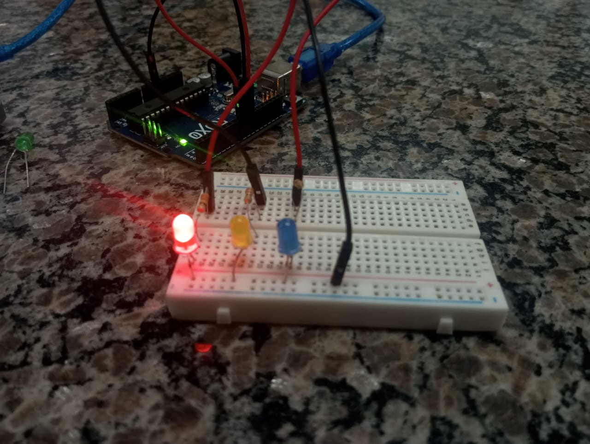
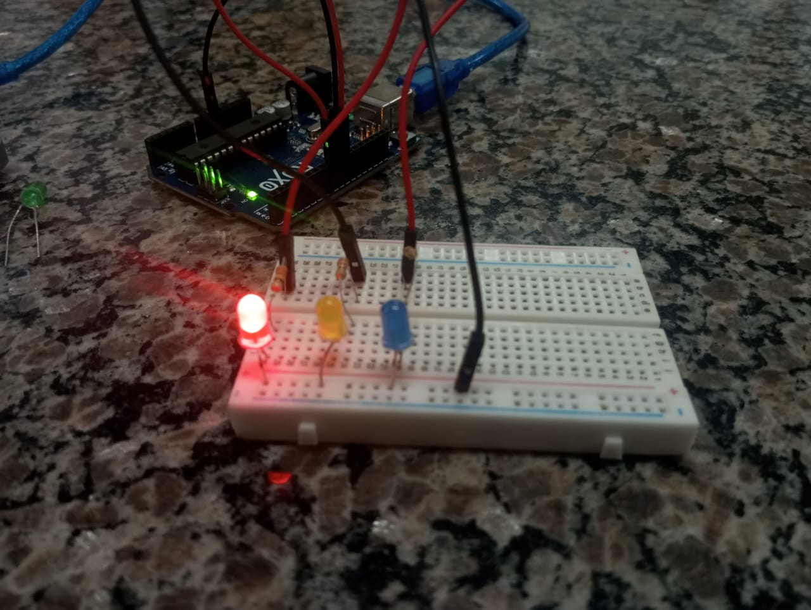

Nesta aula, aprendemos como funciona o LED. Também vimos como fazer uso dos resistores, e utilizando esses dois componentes fizemos o LED piscar usando o Arduino.
Nesta aula nós usamos os leds e resistores que utilizamos anteriormente e usamos para fazer um semáforo com os leds alternando, e mudamos o Aula da placa Arduino.


 
